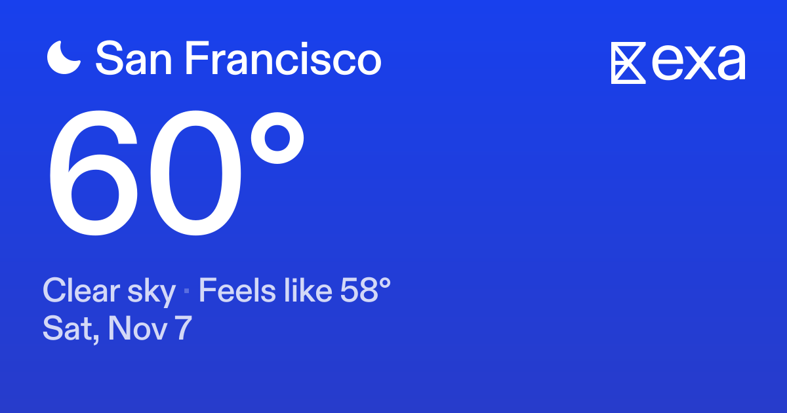
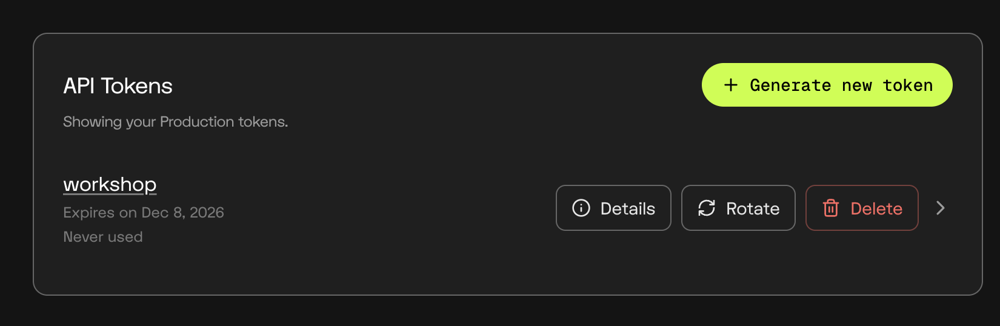
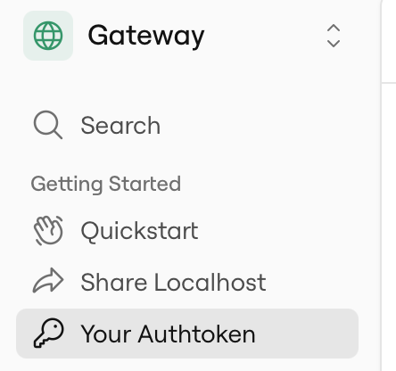

“Prices range from $119 to $219 depending on each guests unique preferences.”
The $150 budget is within the published range.
Confirm the experience, tax, tip, and availability.
An open-source agent with memory,
search, and a browser.
Jakub Hojsan · FDE Lead at Exa

Node.js 26.12.1+ with npm · Install nvm ↗·A coding agent running locally
git clone https://github.com/JakubHojsan/aie-code-personal-agent.git cd aie-code-personal-agent nvm install nvm use npm ci cp .env.example .env
Open the repository in your coding assistant.
nvm reads .nvmrc. Already have Node 26.12.1+? Skip the nvm commands.Search for AI agents
An independent web index
and a network of data partners.
Documentation, APIs,
and code examples
Company research
and account context
Places, research,
and everyday decisions
POST /searchSearch indexed web and data sources.
Return evidence your model can use.
A natural-language query
Source URLs + relevant passages
“Sushi omakase in San Francisco, around $150 per person.”
POST /contentsExtract readable content from a known set of URLs.
One or more URLs
Page text, highlights, or summaries
“Read the restaurant pages I have already collected.”
POST /agent/runsGive Exa a research task and the shape of the result you need.
A task + an output schema
Grounded research + structured results
“Find companies matching these criteria, then enrich each one.”
POST /monitorsRepeat a search and receive newly discovered results by webhook.
A topic + a schedule
Updates delivered to your application
“Tell my application when new local events are announced.”
Robin San Francisco omakase
official price range
{
"query": "...",
"contents": {
"highlights": true
}
}Less page text for the model to process.
More room for conversation and tool results.
Source URLs stay attached.
HOME · OUR STORY · GALLERY · MEMBERSHIP · JOURNAL · PRIVATE EVENTS · CAREERS · PRESS · CONTACT · 中文 · ENGLISH. Welcome to our neighborhood kitchen, a place for long conversations, familiar faces and meals shared around the table. This is our restaurant journal: a collection of stories from the dining room, notes from our team, photographs of the neighborhood and announcements from the studio upstairs. Use the navigation above to explore our archives, discover upcoming collaborations, learn about the people behind the counter or browse our printed publications. Our latest journal issue brings together a conversation with a ceramic artist, a photographic essay about quiet streets and a look at the work that happens before the first guest arrives.
OUR STORY. The restaurant began with a borrowed table, a handwritten notebook and a small group of friends who wanted a welcoming room to gather in. Over the years the furniture has changed, the shelves have filled with books and the walls have collected photographs, but the idea remains the same. We believe a good neighborhood restaurant should feel familiar without standing still. Our journal follows that process through interviews, sketches, old photographs and recollections from regular guests. In this month’s issue, our founder reflects on the original floor plan, the first bowls we ordered and the afternoon we finally hung the sign above the doorway. Read the complete interview in the archive, where you can also find the earliest photographs of the space.
Prices range from $119 to $219 depending on each guests unique preferences.
INSIDE THE DINING ROOM. The shelves, lamps and chairs were collected over several years rather than ordered as a matching set. A local carpenter restored the long table beside the window, while friends contributed prints, postcards and books. The ceramic bowls come from a small workshop whose makers experiment with quiet variations in glaze and shape. In our gallery you can see the room in different seasons, from the soft light of a rainy afternoon to the reflections that appear in the windows after dark. The photographs are arranged by year and include earlier versions of the interior. Objects and arrangements shown in the archive may have changed since the photographs were taken.
FROM THE JOURNAL. This season we asked a photographer, a bookbinder and a furniture maker to share the tools they reach for most often. Their answers became a series about the relationship between useful objects and daily routines. The photographer described carrying a small camera on familiar walks. The bookbinder showed us a drawer of paper offcuts saved for future projects. The furniture maker talked about repairing an old chair instead of replacing it. You can read each conversation in full, browse the accompanying portraits or subscribe to receive the next installment. Related stories include a visit to a print studio, an afternoon in a flower market and a conversation about collecting everyday objects.
MEMBERSHIP & NEWSLETTER. Our occasional newsletter includes new journal stories, exhibition announcements, workshop invitations and photographs that do not appear elsewhere on the site. Membership is free and you can unsubscribe using the link at the bottom of any message. Gift vouchers are available for celebrations, thank-you gifts and private gatherings; contact the team for the current conditions before purchasing. We also keep a small selection of postcards, notebooks and printed photographs at the counter. Availability changes throughout the year, and objects pictured in past newsletters may no longer be offered. Follow our social accounts for behind-the-scenes updates, or explore the newsletter archive to see previous issues before signing up.
PEOPLE & COLLABORATIONS. Behind the dining room is a changing group of cooks, hosts, makers and neighbors. Our team interviews focus on the paths that brought people here, the work they enjoy and the places that inspire them outside the restaurant. Some collect records, some sketch buildings and others spend their days off visiting markets with friends. We occasionally invite local artists to display work on the walls or contribute a design to our printed journal. These collaborations are documented in the archive alongside opening-night photographs and conversations with the artists. For exhibition proposals, please send a short introduction and a link to your portfolio through the contact page.
GATHERINGS & PRIVATE EVENTS. The room has hosted book discussions, photography evenings, small workshops and celebrations with friends. Our event archive contains photographs and reflections from those occasions, including a print exchange, a drawing afternoon and a listening session organized by a neighborhood record shop. Past events are shown for reference and are not a calendar of upcoming availability. If you are planning a gathering, contact the team with the proposed date, group size and a short description. We will reply with the information relevant to that request. Please do not assume that furniture arrangements, decorations or services shown in earlier event photographs are included in a future booking.
THE NEIGHBORHOOD ARCHIVE. We have been photographing nearby streets, storefronts, windows and small details on our walks for several years. The archive is organized into collections rather than a visitor guide: morning deliveries, hand-painted signs, rainy pavements, window displays and the changing light across familiar buildings. Some photographs record places that have since closed or moved. Others show the same corner in different seasons. The purpose is to document everyday life around the restaurant, not to provide current business information. Select a collection to browse the full sequence, read the photographer’s notes and see the dates attached to individual images. Prints from selected collections are occasionally displayed inside the dining room.
CONTACT, PRESS & CAREERS. For editorial requests, please include your publication, deadline and the type of material you need. Our press folder contains selected interior photographs, a short introduction and credits for previous collaborators. Image permissions must be confirmed for each use. We welcome introductions from people interested in hospitality, photography, publishing and design; vacancies are listed separately when available. General enquiries are answered by the team rather than an automated reservation system. Messages sent through social accounts may take longer to reach us. Please use the contact form for accessibility questions, feedback about the website or corrections to archived information.
FOOTER. Careers · Press enquiries · Private events · Newsletter archive · Accessibility · Terms of use · Privacy policy · Cookie settings · Manage preferences · Site credits. This illustrative website uses essential cookies to remember language and display settings. Optional analytics help us understand which journal sections readers visit. You can change your preferences through the settings panel. Photographs, illustrations and written material belong to their respective creators and may not be reproduced without permission. Archived stories describe the time at which they were published; they are not live notices. All rights reserved. Return to the top of the page to browse the main navigation or visit the contact page.
“Prices range from $119 to $219 depending on each guests unique preferences.”
The $150 budget is within the published range.
Confirm the experience, tax, tip, and availability.
Real Search capture · title edited, excerpt shortened.
The interpretation above is authored for the workshop.
The model can cite the evidence
and fetch more when the task needs it.
Some partner-backed sources resolve
into search results.
/search→Sources + excerptsUse the returned evidence in your own agent loop.
Search data index ↗Attach partner capabilities to an
Agent run through dataSources.
/agent/runs→Partner tools + web research Similarweb
Similarweb Particle
ParticleThe same request, with your context.
Sushi
$150 per person, before tax and tip
Your agent · running on your laptop
Remember I live in San Francisco,
love sushi, and budget
$150 per person before tax and tip.Authored example · not recorded agent output
Agent loop
Conversation history
Mem0 storage
Qwen inference + embeddings
Exa search · Kernel browser
Linq messaging
The laptop and HTTPS tunnel stay running while you message the agent.
Start with Exa MCP, then connect the five integrations.
Your repository is ready. Connect Exa MCP,
then implement and verify one integration at a time.
Choose your coding assistant.
Follow its installation steps.
Reconnect and confirm Exa is enabled.
https://mcp.exa.ai/mcpUse Exa to find the official Search API docs. Show how to request highlights. Cite the official documentation URL. Do not write code yet.
You see an Exa tool call and a link to the official docs.
Read starter/README.md and src/model.ts. Implement TODO 1 in starter/integrations.ts. Connect complete(); forward messages, tools, and signal. Leave TODOs 2–5 unfinished. Run npm run typecheck. Show how to verify a real reply with starter:chat.
starter/integrations.ts · TODO 1WORKSHOP_MILESTONE=1 OPENROUTER_API_KEY in .env
npm run doctor npm run starter:chat
A real model reply appears in your terminal.
Help me plan a Friday sushi dinner in San Francisco.
Use Exa MCP to find the official Search API docs. Implement TODO 2 in starter/integrations.ts. POST /search: type auto, numResults 5, highlights true. Preserve URLs and retrieval time; bound the evidence. Use the existing tool loop. Run npm run typecheck.
starter/integrations.ts · TODO 2WORKSHOP_MILESTONE=2 EXA_API_KEY in .env
npm run doctor npm run starter:chat
Open one returned URL and verify a claim.
Find sushi in San Francisco under $150 per person before tax and tip. Include sources.
Use Exa MCP to find the official Kernel browser docs. Read src/browser.ts; implement TODO 3 only. Connect browse() in starter/integrations.ts. Forward URL, question, and signal unchanged. Keep URL validation and cleanup. Run typecheck.
starter/integrations.ts · TODO 3WORKSHOP_MILESTONE=3 KERNEL_API_KEY in .env
npm run doctor npm run starter:chat
A real Kernel session returns the page’s price text.
Open https://www.robinomakase.com/location/robin-san-francisco/ and read the omakase price range.
Use Exa MCP to find the official Mem0 OSS docs. Read src/memory.ts; implement TODO 4 only. Return personalMemory(store) from connectMemory. Keep owner scope, recall, and memory tools for explicit requests. Run typecheck; show a save → restart → recall check.
starter/integrations.ts · TODO 4WORKSHOP_MILESTONE=4 Owner + embeddings configured
npm run starter:chat
Restart, ask what the agent remembers, then request dinner without repeating your preferences.
Remember I live in San Francisco, love sushi, and budget $150 per person before tax and tip. What do you remember about me?
Open Linq sandbox ↗.
Verify your account for the 7-day trial.
Activate your sandbox.
Click Generate new token.
In your project folder, run nano .env.
Add LINQ_API_KEY=your_token.


Copy your token.
Authenticate once:
ngrok config add-authtoken YOUR_AUTHTOKEN
ngrok http 3400
Keep this terminal running.
Copy the HTTPS forwarding URL.
Your Linq API key can create the subscription.
Read docs/LINQ.md. Use LINQ_API_KEY from .env. Get the HTTPS URL from ngrok at 127.0.0.1:4040/api/tunnels. Create a Linq V3 webhook subscription via the API: target: HTTPS URL + /webhooks/linq?version=2026-02-03 event: message.received phone filter: LINQ_PHONE_NUMBER from .env Save signing_secret as LINQ_WEBHOOK_SECRET in .env. Keep the subscription ID. Do not print any secrets. Check for an existing subscription; avoid duplicates.
The subscription exists and LINQ_WEBHOOK_SECRET is saved.
Use Exa MCP to find the official Linq webhook docs. Read docs/LINQ.md; implement TODO 5 only. Connect sendReply using config.linqKey. Forward chat, reply, and the idempotency key. Keep the queue and signature checks. Run typecheck. For now: sendReply(key, chat, reply, id, fetch, []).
starter/integrations.ts · TODO 5WORKSHOP_MILESTONE=5 Keys + webhook saved in .env
npm run doctor npm run starter:phone
Your phone receives a sourced reply.
iMessage + RCS compatible
SMS text fallback
Text your provisioned line: “Find dinner for Friday using my saved preferences.”
Implement TODO 6 in starter/integrations.ts. Extract public HTTPS URLs; prefer returned Exa Library URLs. In deliverReply, pass sourceCards(text) to sendReply. Send a short summary without raw URLs, then ONE OG card. Use sourceCardLimit(request) for explicitly requested extras. Keep plain texting: no bold, Markdown, or bullet lists. Run typecheck and tests. Restart starter:phone. Repeat the same search and compare before vs after.
starter/integrations.ts · TODO 6npm run starter:phone
Keep ngrok running.
Repeat the same search.
Now see a source card
with a title and image
when the page provides them.
iMessage + RCS compatible
Find sushi in San Francisco around $150 per person. Include sources.
Jev picks an emoji that fits the message.
“No emojis” means no reaction.
Start after the reaction.
Keep it visible while the agent works.
Clear typing when done—even if the request fails.
iMessage + RCS · SMS fallbackComplete TODO 7 and connect it
to the starter server.
starter/extras.ts
starter/server.ts
In .env: REACTION_MODE=jev
Uses your OpenRouter key.
“Find sushi in San Francisco.”
Reaction → typing → reply
*Linq lists RCS reactions; custom emoji support needs a device check. Full setup and checks are in the coding prompt.
Implement TODO 7 in starter/extras.ts; wire starter/server.ts. Use src/reactions.ts, src/typing.ts, and src/worker.ts as refs. Jev chooses an emoji or none via OpenRouter Decisions. Allowlist choices; on error or 2s timeout, use local matching. React to the inbound message ID, then start typing. Refresh typing every 60s; stop in finally after reply/failure. Keep owner checks, deduplication, and reply retries. Test reaction → typing → reply, plus API failures. Set REACTION_MODE=jev and OPENROUTER_API_KEY in .env. Run npm run doctor, npm run typecheck, and npm test. Restart npm run starter:phone; keep ngrok running. Verify reaction → typing → reply on iMessage. Typing is iMessage-only through Linq. Verify custom emoji reactions on RCS. See docs/WORKSHOP.md, optional extension 7, for endpoint details.
Implement TODO 8 in starter/extras.ts. Add voice routing in starter/server.ts. Use src/extras.ts and docs/WORKSHOP.md as references. Also recognize “send me a voice note” / “read that aloud”. Generate a short Qwen answer, then call OpenRouter TTS: mistralai/voxtral-mini-tts-2603, en_paul_neutral, mp3. Validate audio/mpeg; save the MP3 under .data/audio/. Upload bytes to Linq; send attachment_id via /voicememo. Persist audio and delivery state; prevent duplicate sends. Run checks; restart starter:phone. Test /voice Say hello.
starter/extras.ts · TODO 8npm run typecheck npm test npm run starter:phone
Native voice bubble: iMessage only. Audio attachment: RCS compatible. Then try “read that aloud”.
cp .env.example .env → nano .envDownload .env.example ↗OPENROUTER_API_KEY= EXA_API_KEY= KERNEL_API_KEY= LINQ_API_KEY= LINQ_WEBHOOK_SECRET= LINQ_PHONE_NUMBER= OWNER_PHONE_NUMBER=
Phone numbers include country codes.
Linq generates the webhook secret.
WORKSHOP_MILESTONE=1 MODEL_NAME=qwen/qwen3.8-27b MODEL_BASE_URL=https://openrouter.ai/api/v1 MEM0_EMBEDDING_MODEL=qwen/qwen3-embedding-4b MEM0_EMBEDDING_DIMENSIONS=2560 AGENT_TIMEZONE=America/Los_Angeles PORT=3400 DATA_DIR=.data
Start at milestone 1.
Increase to 5 as you finish each integration.
# Copy to .env. Never commit real keys or phone numbers. # 1=model, 2=Exa, 3=Kernel, 4=Mem0, 5=Linq. WORKSHOP_MILESTONE=1 EXA_API_KEY= OPENROUTER_API_KEY= MODEL_NAME=qwen/qwen3.8-27b MODEL_BASE_URL=https://openrouter.ai/api/v1 # Optional alternative model-provider key: MODEL_API_KEY= MEM0_EMBEDDING_MODEL=qwen/qwen3-embedding-4b MEM0_EMBEDDING_DIMENSIONS=2560 # Keep dimensions matched to the embedding model. Changing them requires reindexing. # Empty uses the model endpoint/key above. MEM0_EMBEDDING_BASE_URL= MEM0_EMBEDDING_API_KEY= # Milestone 3: rendered page inspection in a Kernel cloud browser: KERNEL_API_KEY= AGENT_TIMEZONE=America/Los_Angeles LINQ_API_KEY= LINQ_WEBHOOK_SECRET= LINQ_PHONE_NUMBER= OWNER_PHONE_NUMBER= PORT=3400 DATA_DIR=.data